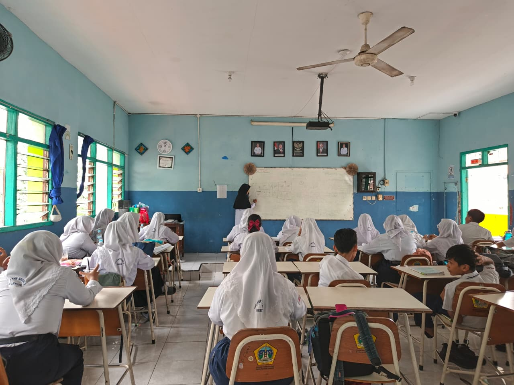
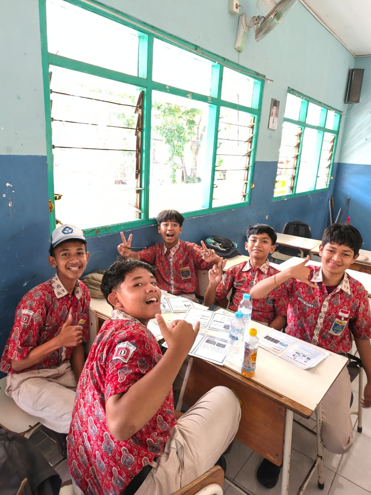
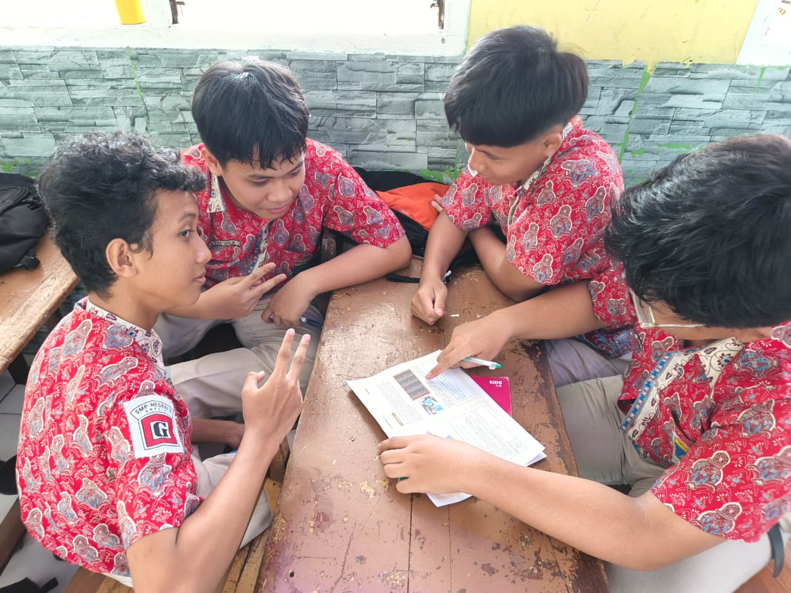
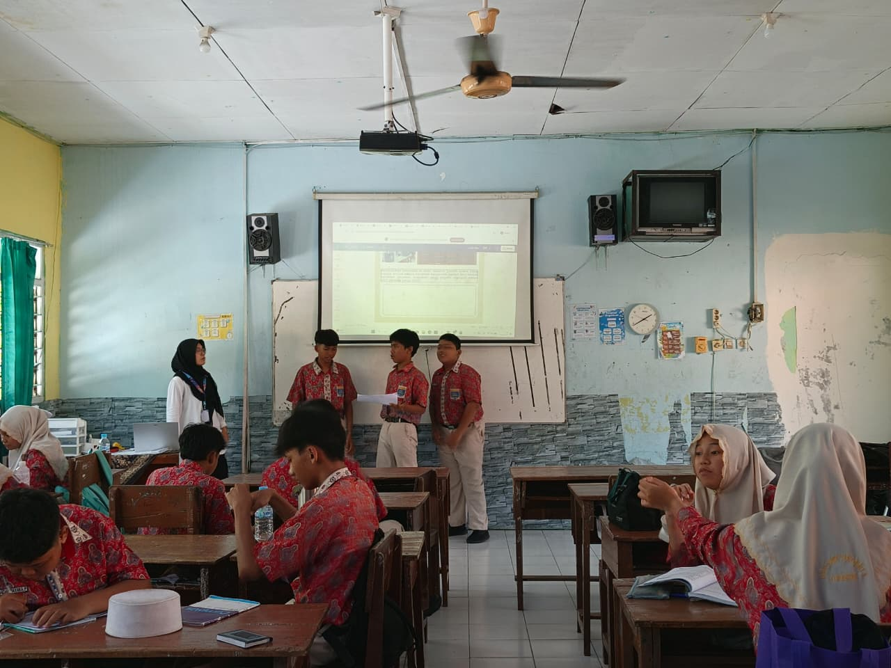
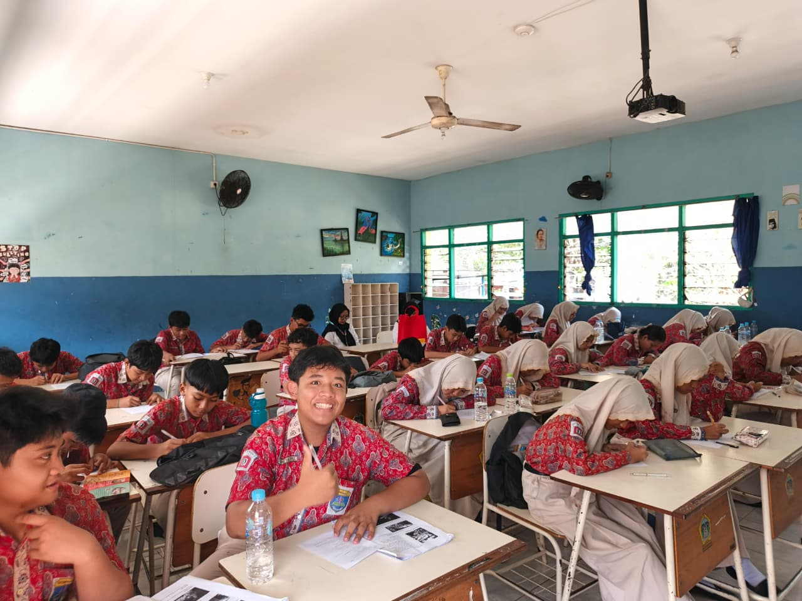
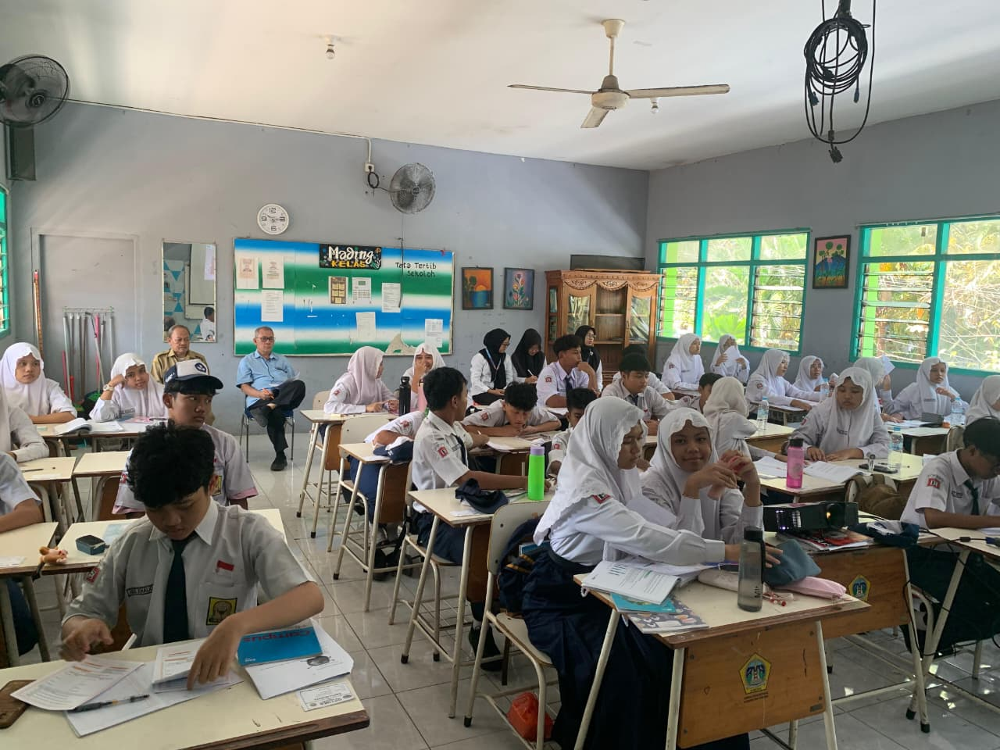

← Kembali ke Artefak
Dokumentasi
Dokumentasi Pembelajaran
Dokumentasi berikut mencatat perjalanan pembelajaran selama praktik mengajar di sekolah. Setiap foto merefleksikan proses interaksi dengan peserta didik, implementasi strategi pembelajaran, dan momen-momen berharga dalam perjalanan menjadi pendidik profesional.

Proses Pembelajaran
Interaksi dengan peserta didik di dalam kelas

Diskusi Kelompok
Kegiatan diskusi aktif bersama siswa

Praktikum Matematika
Kegiatan praktikum untuk memahami konsep

Presentasi Siswa
Momen siswa mempresentasikan hasil kerja

Evaluasi Pembelajaran
Proses asesmen dan evaluasi kompetensi

Bersama Guru Pamong
Kolaborasi dengan guru pembimbing